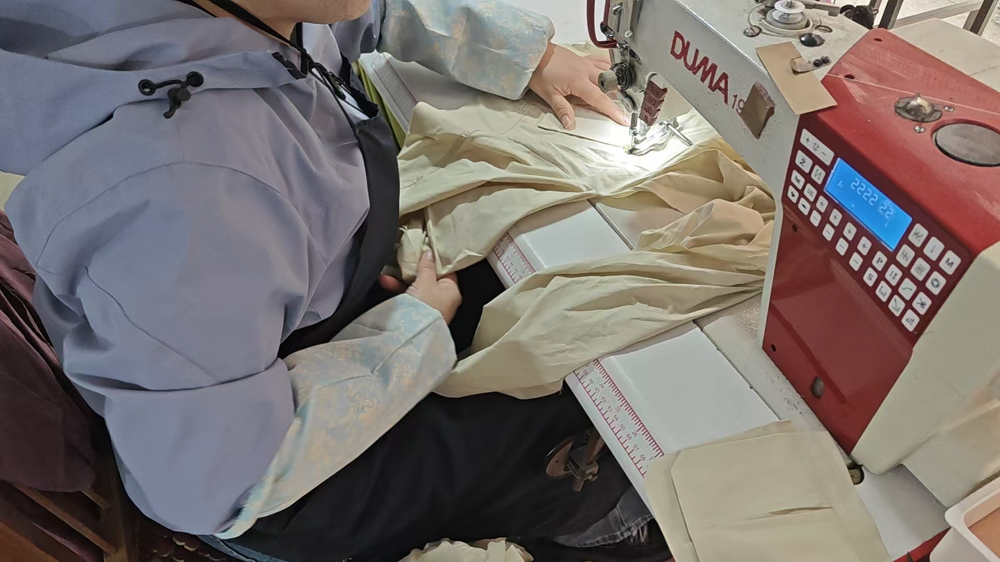

A collection can begin with a strong print, an unusual sleeve, a precise trouser break or the way a jacket falls from the shoulder. Turning that idea into a garment that can be sampled, sold and replenished requires a different kind of conversation with a manufacturer.
For many European womenswear labels, the challenge is not finding a factory that can make clothing in general. It is finding a partner who can understand the intent behind one specific style, suggest a workable construction, source a fabric that supports it and keep the result consistent when the style comes back for a second run.
That is the part of manufacturing that matters most to a design-led brand. The first sample can look right and still be difficult to reproduce. A fabric can feel beautiful and behave poorly in cutting. A small order can be accepted and then become uneconomical once colours, sizes and trims are confirmed. Good development work addresses these questions before they become production problems.

Start with the garment, not the category
Manufacturers often present long lists of product categories. For a designer brand, that list is less useful than a clear answer to one question: can this partner make this garment well?
A tailored trouser with a curved waistband, a shirt with a dropped shoulder and gathered cuff, a dress cut on the bias or a lightweight jacket with a complex collar all place different demands on a factory. The relevant experience is not simply “womenswear”. It is pattern interpretation, fabric handling, construction judgement and the ability to explain where a design may need adjustment.
CYNCHO works with woven womenswear brands on selected shirts and blouses, tailored and relaxed trousers, dresses, coordinated sets and lightweight jackets. Our knitwear resources extend this work to selected cardigans, pullovers and knitted tops. We do not claim to be the right fit for every garment; we assess each style against the construction, material and quantity involved.
That assessment starts with what the brand already has. A detailed tech pack is helpful, but a sketch, reference image, original sample or even a clear description of the intended fit can be enough to begin. The goal is to identify what is already defined and what still needs to be resolved.
Which details give this style its character, and which of them could change during production without changing the design?
Shoulder shape, collar proportions, sleeve volume, waistband construction, pocket placement and trouser length are not minor finishing points in designer womenswear. They determine whether the finished garment still feels like the original idea. Discussing them at sample stage is far more effective than discovering them at bulk inspection.
Choose fabric for how it behaves, not only how it looks
Fabric is often treated as a purchasing decision made after the design is complete. In practice, it shapes the design. The same shirt pattern can feel crisp, fluid or soft depending on the cloth. A trouser can hold a clean line in one wool blend and lose its shape in another. A printed dress may need a fabric with enough weight to carry the print without becoming stiff.
For distinctive collections, the relevant questions go beyond fibre content:
- How does the fabric drape, and does that support the intended silhouette?
- Will it shrink, crease or relax after washing or pressing?
- Does it fray, slip or distort during cutting and sewing?
- Is the colour achievable consistently across repeat lots?
- Can the mill supply the required quantity in the required timeframe?
These points should be tested while the style is still flexible. A fabric that is difficult to source may require a sample in a near match, followed by a confirmation sample in the actual production cloth. That sequence is often more honest than approving a garment in a substitute material and assuming the bulk version will behave in the same way.
When the original fabric is not the practical choice
A design reference may specify a fabric that is unavailable, above the target cost or unsuitable for the intended finish. The useful response is not simply to substitute something cheaper. It is to compare alternatives against the qualities that matter: weight, hand feel, drape, stability, colour and supply.
CYNCHO supports fabric and trim sourcing for selected woven womenswear styles and can discuss alternatives when the first choice cannot be secured. For brands pursuing more responsible materials, suppliers can provide GOTS, GRS or RWS documentation where available and applicable to the specific material. Certification should be confirmed against the actual fibre, supplier and order before it is used in customer-facing claims.
Where a fabric is new to the brand, request a swatch and test it in the intended colour before committing. Check how it behaves after washing, pressing and a day of wear. A fabric that photographs well but creases heavily or loses shape may not support the customer experience the brand is trying to create.
Resolve the details in sampling
Sampling is often described as a check on fit. For designer womenswear, it is also a check on construction, proportion and production logic. A sample should reveal how the garment moves, where it pulls, whether the trims sit correctly and whether the intended finish can be repeated at the required quantity.
A practical sample development sequence looks like this:
- Brief review. Clarify the target customer, silhouette, fabric direction, size range and commercial constraints.
- Pattern and construction review. Translate the reference into a pattern, seam plan and trim list that can be produced consistently.
- First sample. Review fit, balance, drape and workmanship on a real garment rather than in isolation.
- Fit and revision round. Record comments with photographs and revised measurements so that changes are traceable.
- Final approval sample. Confirm the production fabric, trims, labels, measurements and finishing standard before bulk begins.
The strongest samples are not necessarily the ones produced fastest. They are the ones that answer the right questions. If a waistband needs to be rebuilt, a collar rebalanced or a pocket repositioned, that work belongs in development. Moving an unresolved detail into bulk creates a much more expensive correction later.
“A sample is not valuable because it is perfect. It is valuable because it makes the next decision clearer.”
Clear sample comments matter as much as the sample itself. A note such as “make the sleeve softer” leaves room for interpretation. A comment supported by a photograph, a measurement change and a reference to the intended shape is far more actionable. Keeping all comments in one dated document helps both sides work from the same version.
Plan a small batch that works commercially
Small-batch production is useful when a brand wants to test a new silhouette, introduce a colour or limit the cash committed to an unproven style. It is not automatically cheaper, and it is not simply a matter of ordering fewer pieces. The economics depend on the garment, the fabric minimum, the number of colours and the production setup.
Before confirming a first run, separate the questions that are often combined into one MOQ figure:
| Question | Why it changes the plan |
|---|---|
| Is the minimum per style, per colour or per order? | It affects how many colours and style variants can be included sensibly. |
| What is the fabric minimum? | A garment run may be small while the mill still requires a larger cloth purchase. |
| Are trims available in small quantities? | Custom buttons, linings or labels can carry their own minimums and lead times. |
| Can the same fabric be used across several styles? | Shared cloth can make a capsule more practical and improve continuity. |
| Is the fabric repeatable? | A successful first run is only useful if the material can be sourced again. |
A smaller order also changes how cost is distributed. Pattern work, sample development, machine preparation and cutting setup do not disappear because the run is short. The price per garment may therefore be higher than it would be at a larger quantity. That is not a reason to avoid a small batch; it is a reason to compare quotes on a like-for-like basis and decide where the flexibility is worth the cost.
For European labels, delivery planning should begin with the date stock is needed in the warehouse, not the date the factory is expected to ship. Work backward through freight, customs clearance, inspection and any buffer the brand needs before launch. Confirm who is responsible for each import cost and what happens if a shipment is delayed.
Protect consistency on repeat orders
A style that sells well becomes more valuable when it can be produced again without losing the qualities customers responded to. Repeat production is therefore not a separate service bolted onto manufacturing. It is a test of how well the first order was documented and controlled.
Several things can drift between runs: the fabric lot, the shade, the shrinkage, the measurements, the trims, the pressing standard or the way a seam is finished. Some variation is inherent in textile production. The important question is whether it has been anticipated, measured and kept within an agreed tolerance.
For repeat orders, the approved sample and production record should remain the reference point. Measurements, fabric details, construction notes and packing requirements need to be available when the next run begins. If a fabric is discontinued, the brand and manufacturer should discuss a replacement before the reorder date rather than after production has started.
Ask how the fabric will be replenished, which reference details will be retained and what lead time is realistic for a second production run.
CYNCHO's quality process focuses on keeping bulk garments aligned with the approved sample and agreed specifications. In long-term client collaborations, we have maintained a defect rate below 1%. The figure is only meaningful alongside a clear inspection standard, so quality expectations, tolerances and the approval process should be agreed before production begins.
Where CYNCHO fits
CYNCHO is a womenswear manufacturer based in Dongguan, China, established in 2010. We work with design-led brands on garment development, fabric sourcing, sampling and small-batch production, with selected capabilities across woven womenswear and knitwear.
Our strongest fit is with brands that have a clear product direction and want a manufacturing partner involved in the practical decisions around it. That may mean developing a first sample, reviewing a tech pack, finding a workable fabric, planning a focused first run or preparing a core style for repeat production.
We are not the right partner for every project. A heavily embellished couture piece, a highly technical performance garment or a category outside our experience may be better served elsewhere. Being clear about that is part of giving a brand useful guidance rather than a generic sales answer.
For European brands already working with other suppliers, CYNCHO can also be considered as an additional partner for selected styles, new developments or production that needs another option. This can add flexibility without requiring a change to every existing supplier relationship.
Start with a specific style
Send us one design you are trying to resolve.
Share a sketch, reference image or tech pack, the intended fabric direction and your target quantity. We will review the construction, sampling route and production options before you commit.
Request a development review